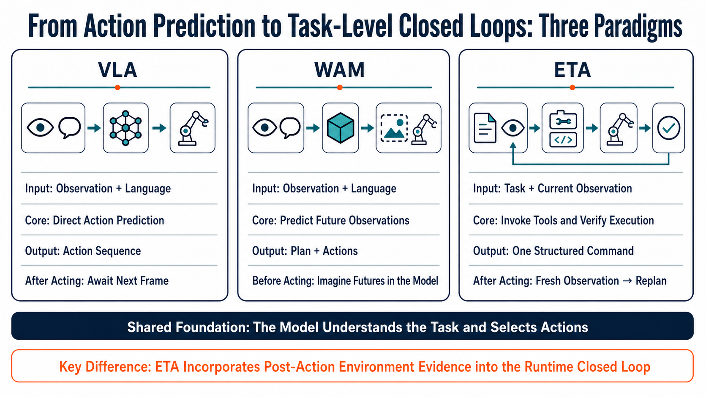
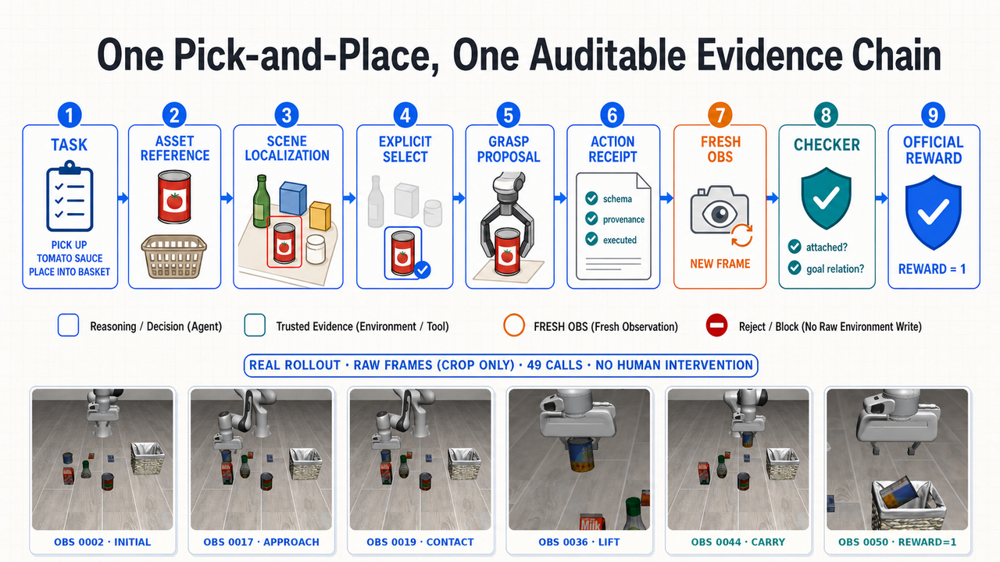

Complete qualitative example
Sponge block → tray
The retained view visibly supports contact, attachment verification, transport, and placement.
d23664831877…961785c
EMBODIED TASK AGENT

Why OpenETA
Action prediction alone does not tell an embodied agent whether a grasp succeeded, whether an object remains attached, or whether a timed-out request changed the world. OpenETA transfers the digital-agent loop—understand, invoke a Tool, inspect feedback, and decide again—into simulators and robots.
OpenETA separates cognition from execution authority across three roles: the Agent proposes structured intent, the Interface validates contracts and gates side effects, and the World returns trusted state evidence. World-changing actions create a fresh-observation obligation before another state-dependent decision.
Approach
Normalize multimodal state and provenance.
Select one bounded Tool from current evidence.
Validate authority, safety gates, and side effects.
Read a trusted receipt and observe the changed world.

Evidence Chain

Simulation Evaluation
The frozen descriptive baseline runs without task-specific policy training. Official LIBERO reward is the only success signal; human and agent assistance are zero for all 56 successful episodes.
| Suite | Successes | Rate |
|---|---|---|
| LIBERO Spatial | 8 / 100 | 8% |
| LIBERO Object | 26 / 100 | 26% |
| LIBERO Goal | 21 / 100 | 21% |
| LIBERO-10 | 1 / 100 | 1% |
| Overall | 56 / 400 | 14.0% |
18/40 tasks succeed at least once. Three LIBERO-10 cells were affected by simulator-TTL expiration and remain counted as zero, so this is descriptive rather than infrastructure-clean confirmatory evidence.
Real Robot
These retained recordings demonstrate hardware execution stages, not a trial denominator or success rate. Formal primitive- and task-validation remain pending a frozen, trial-level evidence batch.

The retained view visibly supports contact, attachment verification, transport, and placement.
d23664831877…961785c
Grasp, lift, and transport are visible. The archived view does not support a final in-basket relation, so this is not presented as complete task success.
90f53fa34971…e19064
Self-Evolution
OpenETA turns traces into candidate strategies, then requires paired replay, non-regression checks, and held-out validation before a candidate can affect future execution.
In the current exploratory study, no candidate passed the promotion gate. This supports the safety mechanism—not a performance-improvement claim—and motivates more identifiable, stage-local operators in the second phase.

Resources
@techreport{openeta2026,
title = {OpenETA: An Embodied Task Agent Framework for
Trustworthy Physical Closed Loops},
author = {{OpenETA Team}},
institution = {Shanghai Innovation Institute},
year = {2026},
url = {https://github.com/OpenMOSS/OpenETA}
}The author list is provisional and will be updated with the frozen release metadata.